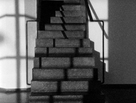

Exhibition Talks
Sasha Pirker, Lotte Schreiber – Österreich 2015
9 min – HD – GermanOV EnglST
Sc+P: Sasha Pirker, Lotte Schreiber – V: Sixpack Film
“If, as Walter Benjamin claimed, buildings are appropriated in a twofold manner through use and perception; that is, tactically and optically, then Sasha Pirker’s and Lotte Schreiber’s EXHIBITION TALKS can be seen as an attempt to somewhat decouple this mode of reception. While the soundtrack deals with the use of aut, the Tiroler Architekturforum’s exhibition spaces, and the conditions of the individual spaces and possibilities to adapt them for one’s own purposes; the visual track offers fragmentary, static, black-and-white views of the same spaces, which stay in the visual register simply by being linked above the montage to a coherent spatial whole.” – Vrääth Öhner, Translation: Lisa Rosenblatt
monday 12 oct 10.30 pm werkstattkino
Lotte Schreiber born 1971 in Austria. Lives and works in Vienna. Filmmaker and artist. Her work has been shown at diverse exhibitions and film festivals.
Films (selection) 36 (with Norbert Pfaffenbichler) 2001 – QUADRO 2002 – I.E. 2003 – Piano Phase (with Pfaffenbichler) 2004 – DOMINO (2005) – a1b2c3 (with Pfaffenbichler) 2006 – BORGATE (2008) – Git Cut Noise 2011 – tracing THALERHOF 2014
Sasha Pirker Artist and Filmmaker, born 1969 in Vienna. Studied Linguistics in Vienna and Paris. Since 2006 she teaches at the Academy of Fine Arts Vienna in the field of film, video and art.
Films (selection) John Lautner, the Desert Hot Springs Motel 2007 – It looks like a Japanese film 2011 – Closed Cicuit 2013 – Livepan 2013 (9. UX) – Es gibt Bilder, weil es Wände gibt – Ein Prolog 2013 (9. UX)